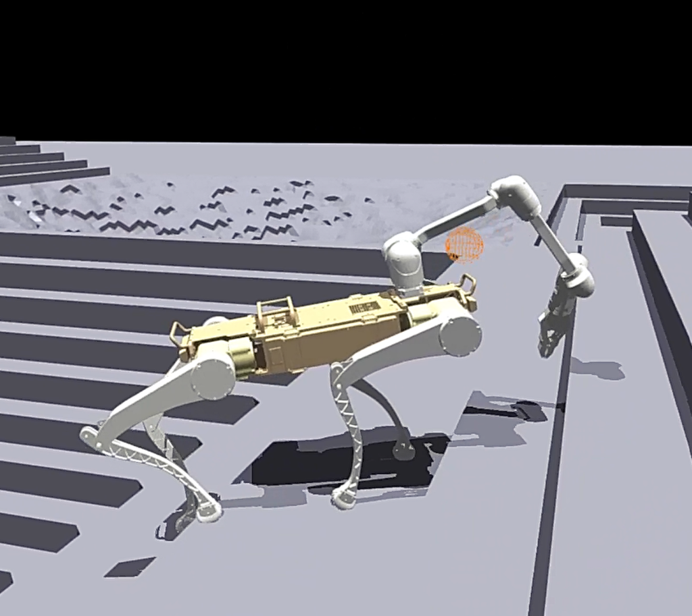
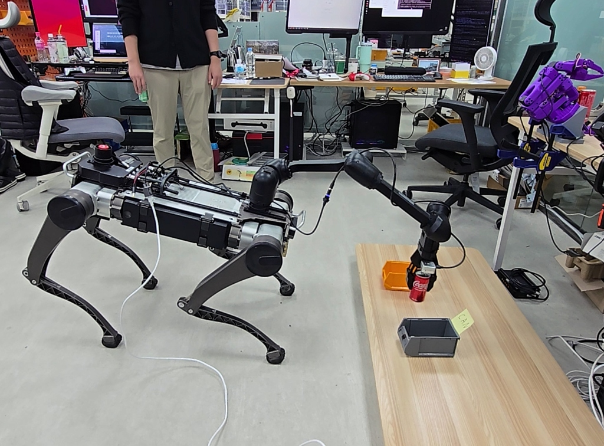
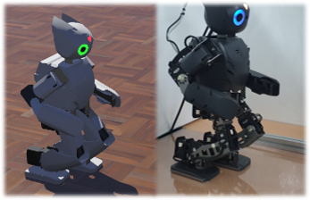
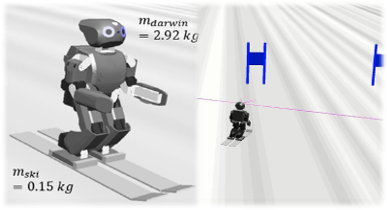

About Me소개
Hello, I am Si-Hyun Kim, a robotics control engineer at Rainbow Robotics.
I am currently developing whole-body control algorithms for quadruped robots equipped with multi-DOF manipulators, focusing on tasks such as door opening and object manipulation. My research primarily centers on model-based control using QP (Quadratic Programming) optimization, including singularity avoidance, self-collision avoidance, and integrated locomotion-manipulation control.
Recently, I have also been exploring learning-based approaches, including Reinforcement Learning (RL) and Vision-Language-Action (VLA) frameworks, with a growing interest in integrating model-based and learning-based control for intelligent robotic systems.
During my master's studies, I researched humanoid robot walking pattern generation and stability control. My work included dynamic walking control based on ZMP and Capture Point stabilization, as well as real-time optimization of CoM and Capture Point trajectories for improved walking stability. I also developed a humanoid skiing robot simulator and implemented LiDAR-based navigation and stabilization algorithms.
안녕하세요. 저는 레인보우로보틱스에서 로봇 제어를 연구하고 있는 김시현입니다.
현재는 4족보행로봇에 장착된 다관절 매니퓰레이터를 활용하여 문 열기, 물체 조작 등의 작업을 수행하기 위한 전신 제어(Whole-Body Control) 알고리즘을 개발하고 있습니다. 특히 QP(Quadratic Programming) 기반 최적화 기법을 활용한 모델 기반 제어를 중심으로, 특이점 회피(singularity avoidance), 자기충돌 회피(self-collision avoidance), 이동 및 조작 통합 제어 문제를 연구해왔습니다.
최근에는 강화학습(Reinforcement Learning)과 VLA(Vision-Language-Action) 기반 접근에도 관심을 가지고 있으며, 기존의 모델 기반 제어와 학습 기반 제어를 결합한 지능형 로봇 제어 시스템을 연구하고 있습니다.
석사 과정에서는 휴머노이드 로봇의 보행 패턴 생성 및 안정성 제어를 연구하였습니다. ZMP와 Capture Point 기반의 보행 안정화 기법, 무게중심(CoM) 및 Capture Point 궤적 최적화를 통한 동적 보행 제어를 수행하였으며, 휴머노이드 스키 로봇 시뮬레이터와 LiDAR 기반 내비게이션 및 안정화 알고리즘을 개발한 경험이 있습니다.

Research Interests연구 관심사
- QP-based Whole-Body Control QP-based Whole-Body Control
- Humanoid & Quadruped Locomotion Humanoid & Quadruped Locomotion
- Robot Manipulation Robot Manipulation
- Reinforcement Learning for Robotics Reinforcement Learning for Robotics
- Vision-Language-Action (VLA) Vision-Language-Action (VLA)
- ROS 2 & Robot System Integration ROS 2 & Robot System Integration
Projects프로젝트

- Solved coordinated 12-DOF whole-body motion by combining manipulator and quadruped Jacobians under end-effector control constraints.
- Controlled end-effector position and orientation while the manipulator base continuously changed due to quadruped body motion and posture variation.
- Stabilized the overall system by regulating the combined CoM of the manipulator and quadruped toward the center of the robot body.
- Implemented integrated locomotion-manipulation control using optimization-based control and real-time state feedback.
- Developed multiple control modes, including automatic quadruped motion for maintaining manipulator workspace constraints and fixed global end-effector control while the robot body moved independently.
- 엔드이펙터 제어 제약 조건 하에서 매니퓰레이터와 4족 보행 로봇의 자코비안을 결합하여 12자유도 전신 모션 제어를 수행했습니다.
- 4족 보행 로봇의 신체 움직임 및 자세 변화로 인해 매니퓰레이터의 베이스가 지속적으로 변하는 상황에서도 엔드이펙터의 위치와 방향을 제어했습니다.
- 매니퓰레이터와 4족 보행 로봇의 결합된 무게중심(CoM)을 로봇 중심부로 조절하여 전체 시스템의 안정화를 달성했습니다.
- 최적화 기반 제어 및 실시간 상태 피드백을 활용하여 이동 및 조작 통합 제어를 구현했습니다.
- 매니퓰레이터의 작업 공간 제약을 유지하기 위한 4족 보행 로봇의 자동 모션 생성, 바디가 움직이는 동안에도 고정된 전역 좌표계 엔드이펙터 제어 등 다양한 제어 모드를 개발했습니다.

- Estimated the distance to the door handle using an RGBD camera of a quadruped robot and generated manipulator motion for handle grasping.
- Controlled the manipulator end-effector trajectory during door opening while automatically moving the quadruped base to maintain the desired manipulator workspace.
- Implemented coordinated locomotion-manipulation behavior for stable door opening tasks on real robot platforms.
- Designed integrated perception and manipulation pipelines using RGBD sensing and real-time robot control.
- Currently developing a hand-camera-based door handle recognition algorithm for more robust autonomous manipulation in complex environments.
- 4족 보행 로봇의 RGBD 카메라를 사용하여 문 손잡이까지의 거리를 추정하고 손잡이 파지를 위한 매니퓰레이터 모션을 생성했습니다.
- 문을 여는 동안 매니퓰레이터의 궤적을 제어함과 동시에, 조작에 필요한 작업 공간을 유지하도록 로봇 베이스를 자동으로 이동시켰습니다.
- 실제 로봇 플랫폼에서 안정적인 문 열기 작업을 수행할 수 있도록 이동 및 조작의 협조 제어를 구현했습니다.
- RGBD 센싱 및 실시간 로봇 제어를 활용하여 통합된 인지 및 조작 파이프라인을 설계했습니다.
- 복잡한 환경에서 보다 강인한 자율 조작을 위해 핸드 카메라 기반의 문 손잡이 인식 알고리즘을 개발 중입니다.

- Established a robust locomotion backbone through a staged training curriculum and leveraged transfer learning to incorporate manipulator actions into whole-body behaviors.
- Designed training environments for simultaneous locomotion and manipulation while preserving locomotion stability and dynamic balance.
- Explored coordinated whole-body strategies by sharing body posture, balance, and manipulation objectives across the quadruped and manipulator.
- Developing a pre-trained policy foundation for diverse quadruped manipulation tasks, aiming to serve as a base model for various downstream applications in the future.
- Investigating sim-to-real transfer and policy robustness for real-world mobile manipulation scenarios.
- 단계적 학습 커리큘럼(staged training curriculum)을 통해 강인한 보행 백본을 구축하고, 전이 학습(transfer learning)을 활용하여 매니퓰레이터 동작을 전신 행동(whole-body behaviors)에 통합했습니다.
- 보행 안정성과 동적 균형을 유지하면서 보행 및 조작을 동시에 수행할 수 있는 학습 환경을 설계했습니다.
- 4족 보행 로봇과 매니퓰레이터 간에 자세, 균형 및 조작 목표를 공유하여 협조적인 전신 제어 전략을 탐구했습니다.
- 다양한 4족 보행 매니퓰레이션 작업을 위한 사전 학습 모델(pre-train model)을 개발 중이며, 향후 다양한 작업을 수행할 때 기초 모델로 활용되도록 할 예정입니다.
- 실제 환경의 모바일 매니퓰레이션 시나리오를 위한 Sim-to-Real 전이 및 정책 강인성을 연구 중입니다.

- Built a LeRobot-based data acquisition framework capable of recording robot joint states, front-camera images, and hand-camera observations for manipulation tasks.
- Established an end-to-end workflow from real-world data collection to VLA model training and evaluation.
- Fine-tuned and benchmarked foundation models including ACT, SmolVLA, π0.5, and GR00T N1.5 on mobile manipulation tasks.
- Implemented both onboard and remote inference pipelines, enabling VLA deployment on embedded robot computers as well as RTX 5090 workstations for performance and latency evaluation.
- Exploring scalable data collection and model adaptation strategies for real-world robotic manipulation.
- 매니퓰레이션 작업을 위해 로봇의 관절 상태, 전면 카메라 이미지 및 핸드 카메라 관측을 기록할 수 있는 LeRobot 기반 데이터 수집 프레임워크를 구축했습니다.
- 실제 환경의 데이터 수집부터 VLA 모델 학습 및 평가에 이르는 엔드투엔드(end-to-end) 워크플로우를 구축했습니다.
- 모바일 매니퓰레이션 작업에 대해 ACT, SmolVLA, π0.5, GR00T N1.5를 포함한 파운데이션 모델을 미세 조정(fine-tuning) 및 벤치마킹했습니다.
- 온보드(onboard) 및 원격 추론 파이프라인을 모두 구현하여, 성능 및 지연 시간(latency) 평가를 위해 임베디드 로봇 컴퓨터뿐만 아니라 RTX 5090 워크스테이션에도 VLA를 배포할 수 있도록 했습니다.
- 실제 환경의 로봇 조작을 위한 확장 가능한 데이터 수집 및 모델 적응 전략을 연구 중입니다.

- Developed a 3D-LIPM-based gait pattern generator for dynamically stable biped locomotion.
- Designed a ZMP stabilization controller to maintain balance during walking motions.
- Implemented whole-body posture generation using Jacobian-based inverse kinematics.
- Built a simulation framework in Webots for gait generation and stability evaluation.
- Validated robust walking performance under various gait cycle and locomotion conditions.
- Published research in an SCI-indexed international journal (JINT).
- 동적으로 안정한 이족 보행을 위해 3D-LIPM 기반의 보행 패턴 생성기를 개발했습니다.
- 보행 동작 중 균형을 유지하기 위한 ZMP 안정화 제어기를 설계했습니다.
- 자코비안 기반의 역운동학(Inverse Kinematics)을 사용하여 전신 자세 생성을 구현했습니다.
- Webots 환경에서 보행 생성 및 안정성 평가를 위한 시뮬레이션 프레임워크를 구축했습니다.
- 다양한 보행 주기 및 보행 조건에서 강인한 보행 성능을 검증했습니다.
- SCI급 국제 학술지(JINT)에 연구 논문을 게재했습니다.

- Developed a LiDAR-based gate detection and autonomous navigation algorithm for alpine skiing tasks.
- Designed a carving-turn control framework based on ski turning radius and body lean angle modeling.
- Implemented ZMP-based stability control using FSR sensor feedback to prevent falls during dynamic turns.
- Built a skiing simulator incorporating ski dynamics, slope conditions, and modeled snow interaction forces.
- Evaluated navigation and stability performance across varying slope angles and friction conditions.
- Published research in an SCI-indexed international journal (Sensors).
- 알파인 스키 작업을 위한 LiDAR 기반의 기문 인식 및 자율 주행 알고리즘을 개발했습니다.
- 스키 회전 반경과 신체 기울기 모델링을 기반으로 한 카빙 턴(carving-turn) 제어 프레임워크를 설계했습니다.
- 동적인 턴 동작 중 넘어짐을 방지하기 위해 FSR 센서 피드백을 활용한 ZMP 기반 안정성 제어를 구현했습니다.
- 스키 동역학, 슬로프 조건 및 설면 상호작용 힘 모델링을 포함한 스키 시뮬레이터를 구축했습니다.
- 다양한 슬로프 각도 및 마찰 조건에서 주행 및 안정성 성능을 평가했습니다.
- SCI급 국제 학술지(Sensors)에 연구 논문을 게재했습니다.
Contact연락처
Email:이메일: shkim7532@gmail.com